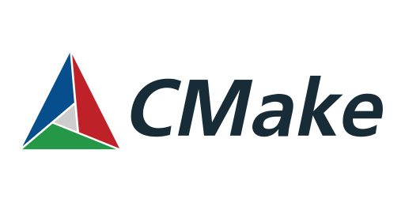
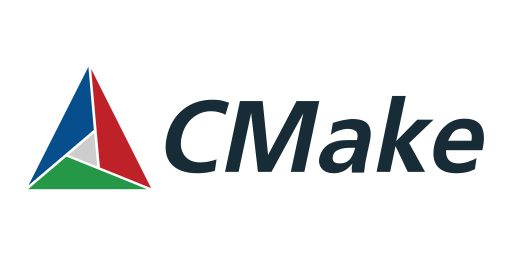

Who am I?
I'm a Mechatronics Engineer who likes to build new stuff, mostly especialized in
embedded software, where I developed professional, academic and personal projects with
the purpose of increase my engineering skills and knowledge. Passionate about building new
stuff and automating boring tasks, learning new skills everyday and become a high demand engineer.
Main interests: Embedded systems, hardware design, computer vision, robotics, artificial inteligence and electronics.
Experience
Software Engineer in Embedded Reprogramming at John Deere Oct 2023 - Currently
-> Develop third party solutions for embedded reprogramming, mostly using UDS, J1939 CAN protocols with C++ algorithms to be able to reprogram
controllers with internal tools.
-> Give support to third party controller issues related with reprogramming in field, factory and engineering sectors all over the world at John Deere,
providing solutions and fixes to maintain and secure thirds party controllers at the companie.
-> Work on simulated controllers application with Python to simulate CAN communication and test reprogramming sequences implemented in C++.
Embedded Software Intern in Sensor development at John Deere Jul 2022 - Oct 2023
-> Develop automated functional tests with Python API's in sensors such as accelerometers and ultrasonic sensors, maain role as functional test developer. Being able to
work with a multidisciplinary team in Mexico - USA.
-> Develop Automated Functional Test Bench with a Raspberry Pi 4, Can Module and Custom circuit for automate tests in accelerometer, making CI/CD deployment 2 times faster and robust using Jenkins.


 
